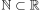
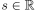
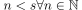
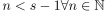
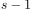

Archimedizität als Folge der Supremumseigenschaft
1. Satz
Das Vollständigkeitsaxiom in Form des Supremumsaxiom impliziert das Archimedische Axiom
2. Beweis
Beweis durch Widerspruch: Angenommen Archimedizität gilt nicht, d.h. es existiert für  eine obere Schranke , so folgt auch

1
Da aber auch gilt , folgt insbesondere auch, dass , d.h. auch  ist eine obere Schranke. Folglich existiert auch keine kleinste obere Schranke und damit auch kein Supremum. Dies ist Widerspruch zur Annahme